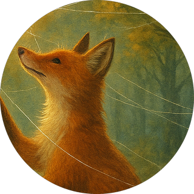
VolpeVelia
Cuce le nuvole con fili di ragnatela. Nessuno capisce perché, ma lei continua.
Nessuno di loro è un eroe. Sono creature che inciampano, che si fermano, che si smarriscono e che proprio da quelle crepe imparano a conoscersi. Li incontrerai più volte, da un racconto all'altro.

VolpeCuce le nuvole con fili di ragnatela. Nessuno capisce perché, ma lei continua.
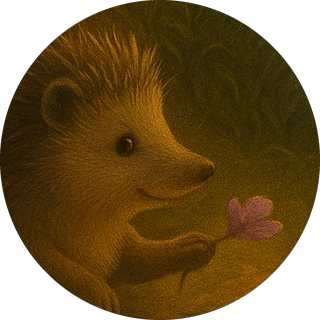
RiccioOgni mattina allinea le foglie davanti alla tana. Una verde, una rossa, una gialla.
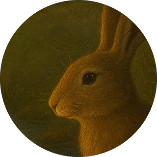
LepreNon parte mai per una corsa senza aver fatto prima tre capriole. Una, due, tre!
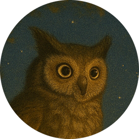
GufoPassa le notti a contare le stelle, per paura che una si spenga per dispetto.
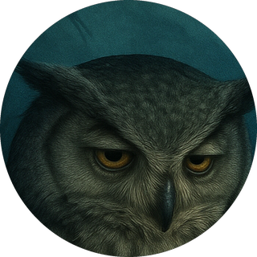
CivettaHa occhi grandi come due pozze di luna, spalancati giorno e notte, finchè non impara a sognare.
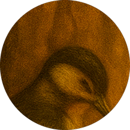
PicchioL'orologiaio del Bosco. Tic, tic. Finché il suo becco lavora, il tempo sa dove andare.
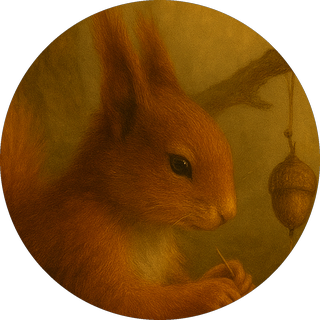
ScoiattoloIl magazziniere delle ghiande. Con le parole non ci sa fare, ma ha un cuore grande quanto il suo magazzino.
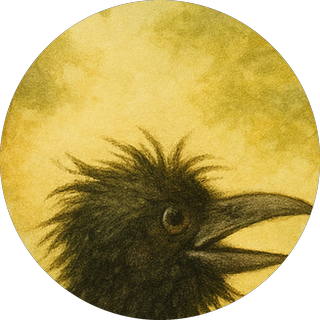
CorvoUn cantastorie dalle piume nere e lucide come inchiostro fresco.
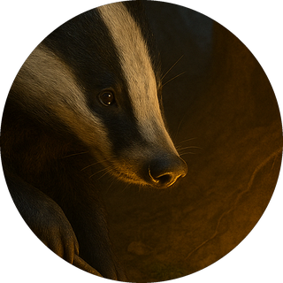
TassoStacca le ombre dai rami al tramonto e le insegue perfino sotto le zampe degli altri.
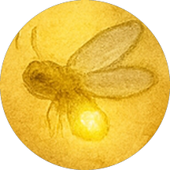
LucciolaDi giorno quasi non si vede, ma al buio illumina tutto il Bosco.
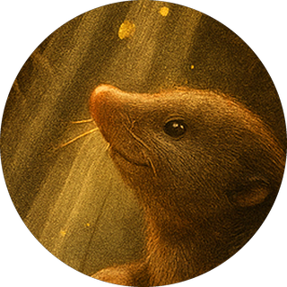
TalpaEsperta scavastrice di cunicoli, con un sorriso che sa di radici.
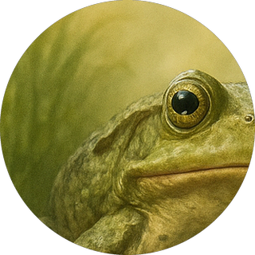
RospoCerca un principe nello Stagno degli Specchi e ci trova solo mille rospi.
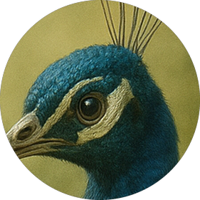
PavoneHa la coda più bella del Bosco e non gli sembra mai abbastanza lucente.
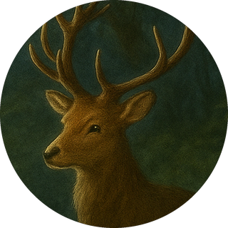
CervoHa una voce che rimbomba come un'eco di montagna e non sa restare in silenzio davanti alle ingiustizie.
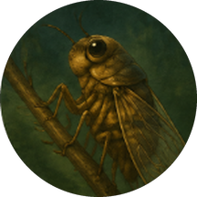
CicalaCanta e poi rincorre l'eco del suo canto per chiuderlo in un sacchetto.
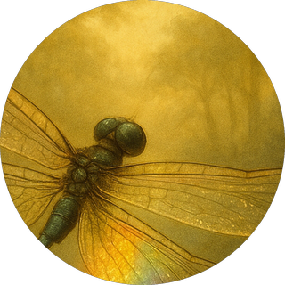
LibellulaTroppo veloce perfino per il proprio riflesso. Non genera colori, ma li dona al mondo.
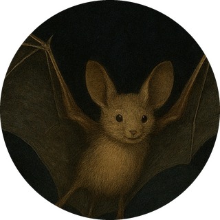
PipistrelloDi giorno inciampa, di notte legge il Bosco forma per forma.
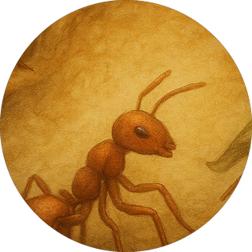
FormicaUn punto rosso in movimento, una fiamma apparentemente instancabile.
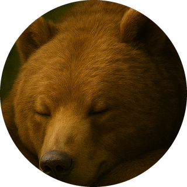
OrsoAma il miele più di ogni altra cosa e dorme mesi interi senza vergognarsene.
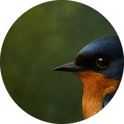
RondineVola per il mondo e non si posa mai, perché teme che nessun ramo la sostenga.
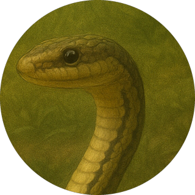
SerpenteAscolta i colori e vede i suoni. Per lui ogni senso è una porta sull'altro.
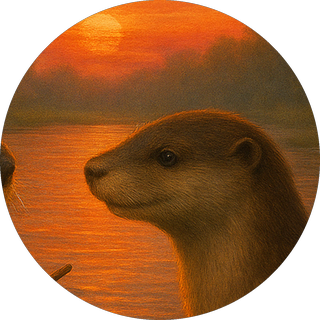
LontraPassa le giornate a farsi portare dal torrente e la sua risata si mescola al canto dell'acqua.
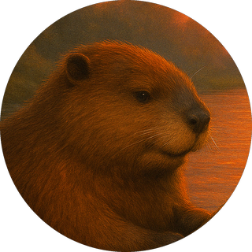
CastoroHa un manto bruno come il miele di castagno e la dedizione paziente d'altri tempi.
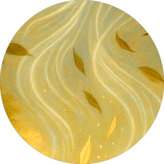
Amico invisibileIl direttore d'orchestra che non si vede.
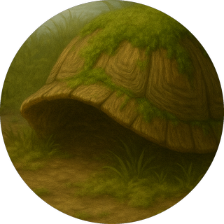
TartarugaCammina piano e si ferma prima di parlare. Non dà consigli, ma dona presenza.
I ritratti degli abitanti, l'illustrazione della mappa e la copertina sono immagini generate con l'intelligenza artificiale, tenute qui come segnaposto. I racconti restano volutamente senza illustrazioni, perché quel posto sia di chi disegna davvero. Se disegni, c'è posto.